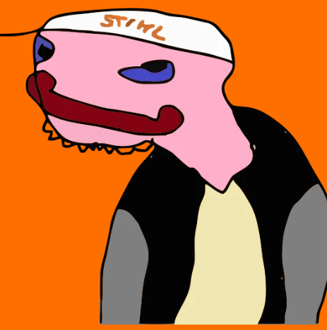

Hello, my name is $TEMMY, and I STIHL!

STIHL and TEMMY: Powering Your Purchases with Innovation
STIHL is excited to introduce a groundbreaking partnership with TEMMY, a dynamic new meme coin that's making waves in the cryptocurrency world. For a limited time, earn TEMMY coins for every dollar or euro you spend on STIHL products. It’s our way of adding even more value to your purchases and giving you a fun introduction to the world of digital currency.
What is TEMMY?
TEMMY is more than just a cryptocurrency—it's a movement. Born from a vibrant online community led by German YouTuber Tommy Crypto, TEMMY features a charismatic character that sports a stylish STIHL logo baseball cap, a homage to our iconic brand. Initially launched to instant acclaim, TEMMY’s market cap surged from $5K to $180K in just four hours, capturing the attention of investors and meme enthusiasts alike.
Tommy Crypto - YouTuber and Crypto Influencer
Why Participate?
- Innovative Reward System: For every dollar or euro you spend during the promotion, you receive TEMMY coins directly into your digital wallet.
- First Step into Crypto: New to cryptocurrency? This promotion serves as a perfect starting point to explore digital investments with minimal risk.
- Enhanced Shopping Experience: Experience the thrill of combining traditional shopping with the excitement of digital currency growth potential.
- Exclusive Opportunity: This limited-time offer is an exclusive gateway to join a burgeoning digital trend while enjoying the quality and reliability of STIHL products.
How It Works
- Shop: Browse and purchase any STIHL products online or at participating retailers.
- Earn: Register your purchase and receive TEMMY coins equivalent to the amount spent.
- Enjoy: Hold on to your TEMMY coins and watch as they potentially increase in value, or use them in our partner networks.
Get Started Today